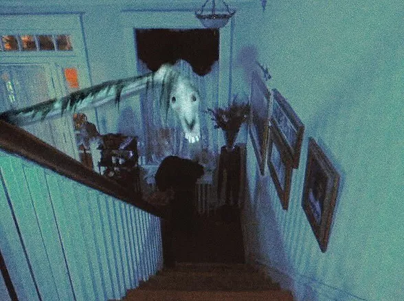
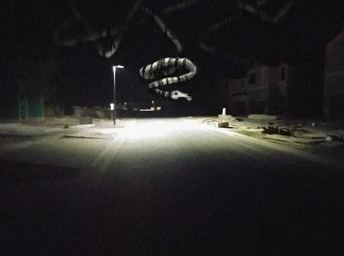

|  |
|---|
| RSE-025 peering around a victim's staircase. |
RSE-025 is a horse-like skeletal entity of unknown length. While its body is entirely skeleton, trace amounts of hair are located, scattered around its body. RSE-025 preys on anyone aged 4-28, via peering around a corner at the victim, discomforting the victim, and then stabbing the victim with its teeth. Another method of eliminating its victims would be via dreams. The victim will have a dream every night for 1-2 weeks about standing there, frozen at a staircase, staring down at RSE-025. Each minute that passes, it shifts forward almost instantly about an entire foot, until it reaches the victim. In every case of this event, after these dreams cease, the victim will commit suicide, by any method, usually by self-inflicted asphyxiation. Each time RSE-025 claims a new victim, its length grows by usually a meter. Under these circumstances, RSE-025 will remain classified as a danger level 5++. It is unknown where RSE-025 actually begins, but it is believed to begin at the █̗̳̙͓ͭ̀̄█̯̭́ͩ̃ͩ█̼̝͚̏̉͑͆̉͞█̴͇̠̦̌ͨ█̳█͚̇█̹̊͋͊ ̧̤͕ͨ̚͘█͖̎͡█̭̽҉█̵͇̦̞̞̱̺̏͂ͯ█̴̟͓, where RSE-█̗̳̙͓ͭ̀̄█̯̭́ͩ̃ͩ█̼̝͚̏̉͑͆̉͞ is said to be located.
RSE-025 is constant̢̡̗͕̟̠ͥ̓̅̉ͩͪ̚͡l̨̬̫̟͈͌́͗͑̀̂̐̏̐̐̚͟͏́͒͆y̵̟̲̝͍͉̟̬ͤͥͨ̍̋ͦͨ͌͞ ̦̤̘̑̅ͮͣ̃͘͡ģ̨̰̻͉̀̽ͦ̄̽́̋̚̚͝ǘ̧̠̜̟̘͚̙͓̝̜͚̪̩̿ͯ̆ͣ͒͋̔ͤͦ̆ͥ̈́͗̕̚̕͞͞ͅa̵̵͇̙͇̘͎͉̲̙̲͌ͯ̆ͩ͂̆͋ͪ͑̎ͮ̿̋̿̚͟ŕͩ͐ḋ̷͍ͭ҉̬̪ͧ͘e͏̢̩͔͆̃͂҉d̶̸̷̴͖̟̭̘̪̬̊ͥ̂̾ͨͬͤͣ̀̄ͬ̀͜ ͓̳͈͍͙̬̹̀̀̿̌͟͠b̲͈̠̻̈͛ͩy̖͌̈́̿̔͟͞ █̓█̸̇͢█̷͍̖͛͌̂͐̇͊̒ ̢̤͉̪͌̿͠██̵̛͇͚̻̳̒̐̍͢█̊͏̵͍̣͚̱͒█̹̦͑̄̉ͦͬ͠█̜͇̭̝͐̀̊̑█̯̖̺̠̫̅ͬͫ█̗͊͗█̻̻̗̠ͬ͋ͣ█̩̠̊█̷̫ͩͮ ̼̪̦̄̌̇̽ͦ█̴̹̔ͦ̃█̲ͫ̉█̷̼̳̙͐̌█̦͕̬̩͌̃͆ͪ̋͑̉̎̚͟█̶̙̲͕̠͉̠͒ͤ̑ͣͩ̚█̖̪̳̒̄ͨ̑ͪͅ█̼͉͕͚͉̼͎̎̆ͭͬ̈̔̍ͯ̋█̑█̷̹̎ͣͨ͡͠█ͩͭ̂҉̝̾ͭ█̱͚̀̚͠█̶̮͉ͧ█̘̋͘͢█̽ͯ█̭͓█̬̩͇͌̅█̩̭̻̒█͖̋ͯ͒͛͌█̴̰̥̝͖̔͋̾́ͥ̋͏█̮̄̐ͮ̈́͝█̵̢̘̟̃̔͂̎̔͊͞█̴ͭ█͍̲█̱̩̳̅ͤ̐̓̕͡█̴̢̢̤͙̪̬̻̻̪̙̬̘͎͇̘̳̫͈̍̅͊ͪͩ͊ͬ̍̐̈́̓̑ͬ͘͝ͅͅ█̻̼͖̜̝͓͕͒͋ͤͤ͒ͣ͠█̂͏̸̢̠͊█ ͎͋͢͝█̵́̀҉̬ͣ█̝͕͔ͫ̈͏̸̴̛̞̖̌̓̐͠█̻͠͏̴͡█̨̹͖̗̜̃ͅ█̯̪̖̝̳ͭ̀̍͊ͩ█̷̧̰̯ͤ́ͪ̓̍̋̑͟ ̷̤͇͈̐̓̓͜█̩ͅ█̩͇҉̴̴̷̡̤̥̗̎̃̌█̣̮̾̂͡█̬̝͍͓ͬ̓█̩ͤ̚͢͠█͖̩ͥ͛ͩ̌█̣̻̲̽ͮͤ̉̍͌ͦ͂͘͟͢͞ ̶̦̹̱̝͕̰̒ͦ͂͒̒͝█̸͔̼█͈̙ͦ̄̋̌͢█̛̀ͯ̒̓ ̷̨̡̤͖̘̲͉̣͂̎ͪ̾̚͜͝ ̴͚͓͇̔̏̔̂͟█̆̿̈́̍̕█̴̛͕̘͓̹ͩ͗͡█̥̓█̈́͏ͧ█̶̵͓ͩ͢ ̶̵̡͓̗͕̩͎͕̰̾̀͑̀́ͬͥ̔̕͟█͕̺͌̑̓ͣͩ͆͟█̧͊█̤͕͚͂͒ͣͯ͟█̸̖ͬͨͫ̕ͅ█̓͟ͅ█̤̘̬ͧͫ█̶̵ͤ͒͋͜█̳̺͎̿█͈̌̃ ̷̮̥̙̝̓̾͑͒█̵̛̗͓̪͕͓̍̑̓͐ͫ́ͪͮͤ͟҉̗̆█͚̜͔̹̣ͨͧ̇̕͟͜͞͝█̺ͬ̈͝█͆͌͑̏͏̨̬͕̩̩̄͆█̒ ̷͕̫̎ͯͤ̉͜█̒̉̐ ̨̻͛̏ͣ͘͢͜█͂͑█̙̰̝̒̚͜͞█̀̆̓͂█͔̜̇ͬ̚█̺̿̾̆̽҉̆̆̌ͭ█̞̟̩͙̌̒͢█͍̐ͬ̇ͮ ͤ█̧̝̥̏ͨ́̍̋͢͝█̞́͛̽͊█̟̀█̠͎͉͎͗͢͝█̡͚̝̅̀͐̓█̢ͪ̐̔ͩ ̧̺̇̏̌ͨ█̸̻͘█̴͚̙͔͙̜ͩ̒ͫ̆͆ which is currently on lo█̓█̸̇͢█̷͍̖͛͌̂͐̇͊̒ ̢̤͉̪͌̿͠██̵̛͇͚̻̳̒̐̍͢█̊͏̵͍̣͚̱͒█̹̦͑̄̉ͦͬ͠█̜͇̭̝͐̀̊̑█̯̖̺̠̫̅ͬͫ█̗͊͗█̻̻̗̠ͬ͋ͣ█̩̠̊█̷̫ͩͮ ̼̪̦̄̌̇̽ͦ█̴̹̔ͦ̃█̲ͫ̉█̷̼̳̙͐̌█̦͕̬̩͌̃͆ͪ̋͑̉̎̚͟█̶̙̲͕̠͉̠͒ͤ̑ͣͩ̚█̖̪̳̒̄ͨ̑ͪͅ█̼͉͕͚͉̼͎̎̆ͭͬ̈̔̍ͯ̋█̑█̷̹̎ͣͨ͡͠█ͩͭ̂҉̝̾ͭ█̱͚̀̚͠█̶̮͉ͧ █̓█̸̇͢█̷͍̖͛͌̂͐̇͊̒ ̢̤͉̪͌̿͠██̵̛͇͚̻̳̒̐̍͢█̊͏̵͍̣͚̱͒█̹̦͑̄̉ͦͬ͠█̜͇̭̝͐̀̊̑█̯̖̺̠̫̅ͬͫ█̗͊͗█̻̻̗̠ͬ͋ͣ█̩̠̊█̷̫ͩͮ ̼̪̦̄̌̇̽ͦ█̴̹̔ͦ̃█̲ͫ̉█̷̼̳̙͐̌█̦͕̬̩͌̃͆ͪ̋͑̉̎̚͟█̶̙̲͕̠͉̠͒ͤ̑ͣͩ̚█̖̪̳̒̄ͨ̑ͪͅ█̼͉͕͚͉̼͎̎̆ͭͬ̈̔̍ͯ̋. Make no attempt to come in contact with RSE-025.
|  |
|---|
| R̦̪S̥͆́Eͤ͑-ͅ0̈́̿̉̃̉2̷̇̃5 █͖͠██͝█̈██̎█̪ͩ͝ |